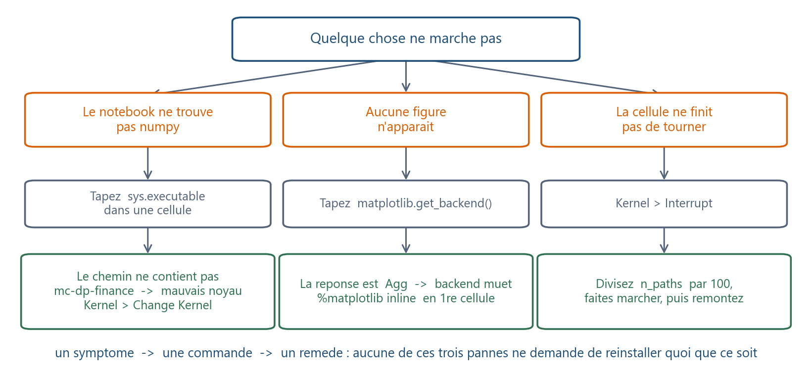

Où suis-je ? unité 7 sur 8
Les unités du chapitre
- 01Six lignes suffisent pour voir…15 min
- 02Un nom retient un résultat…20 min
- 03Une liste range des prix dans l'ordre20 min
- 04Une boucle parcourt25 min
- 05Une fonction nomme un calcul20 min
- 06Un tableau numpy remplace la boucle25 min
- 07Votre machine devient l'ordinateur du cours30 min
- 08Huit fiches d'une page suffisent…45 min
Dans cette unité
Outils : Python de zéro, sans rien installer
Votre machine devient l’ordinateur du cours
Installer, ce n'est pas « avoir Python », c'est avoir un environnement, savoir le prouver, et savoir diagnostiquer les trois pannes qui font l'essentiel des incidents.
La question
Jusqu'ici, la machine était prêtée par Colab et remise à neuf à chaque session : rien à installer, rien à casser. À partir du ch05, cela ne suffit plus. Un seul calcul du ch05 fabrique 100 000 scénarios de 252 pas, soit 25,2 millions de nombres à virgule, soit 202 Mo pour un seul tableau, au-delà du plafond de 10 millions d'éléments (80 Mo) que ce cours s'impose, donc à découper en blocs. Et Colab coupe la session après quelques heures d'inactivité.
Seconde raison, moins visible et plus sérieuse : le projet final sera exécuté chez le correcteur, sur une autre machine que la vôtre. La question est donc double : que faut-il exactement sur votre machine, et comment le prouver à quelqu'un qui n'est pas devant ?
On essaie d’abord
Une seule question : combien de Python différents pensez-vous déjà avoir sur cet ordinateur ?
La plupart des gens répondent « un, ou zéro ». La réponse observée en salle est deux ou trois : l'alias que Windows installe d'office et qui renvoie vers le Microsoft Store, une vieille Anaconda oubliée, parfois un Python de python.org livré avec un autre logiciel. Vérifiez, dix secondes, dans un terminal :
py -0p
Et depuis n'importe quel notebook ou script :
import sys
import shutil
print(sys.executable) # le Python qui execute CETTE ligne
print(shutil.which("python")) # celui que le terminal appellerait
Si ces deux chemins diffèrent, vous tenez la cause de l'incident numéro un du cours. C'est tout l'objet de ce qui suit : cesser de dire « Python » et commencer à dire lequel.
L’idée
Un environnement, pas une installation
Un environnement est une installation isolée : son propre interpréteur (le programme qui lit vos lignes de Python et les exécute), ses propres bibliothèques, ses propres versions. On en crée un par cours, par projet, par client : deux environnements sur la même machine peuvent porter deux versions de numpy sans se gêner, et c'est pour cela qu'on en fait.
Étape 0 : obtenir le dossier du cours. Tout ce qui suit se passe dans ce dossier : il faut donc l'avoir sur son disque avant de commencer. Ce dossier, c'est le dépôt du cours, l'arborescence complète des fichiers telle que l'enseignant la distribue. Il vous est remis en séance, ou déposé sur l’espace de cours, sous forme d’archive ZIP : pensez à la décompresser : un ZIP non décompressé n’est pas un dossier utilisable.
Une exigence sur l'emplacement : chemin sans espace, sans accent, hors OneDrive. C:\cours\mc-dp-finance va ; un OneDrive\Bureau\Cours de Finance\ cassera l'installation de façons peu lisibles (point 4 des incidents). Ouvrez ensuite un terminal dans ce dossier : clic droit → Ouvrir dans le terminal.
Étape 1 : créer l'environnement. Le cours en fournit la recette dans environment.yml. Trois commandes, dans l'Anaconda Prompt, le terminal que l'installateur conda ajoute au menu Démarrer, et qui est le seul, sous Windows, à connaître la commande conda sans réglage :
conda env create -f environment.yml
conda activate mc-dp-finance
python check_install.py
La première construit l'environnement (3 à 10 minutes). La deuxième l'active : le préfixe de la ligne de commande passe de (base) à (mc-dp-finance), et c'est cette parenthèse, et rien d'autre, qui dit où vous êtes ; elle est à retaper à chaque nouveau terminal. La troisième est le sujet du paragraphe suivant.
Deux consignes qui évitent la moitié des incidents : choisissez Miniconda (quelques centaines de Mo installés) plutôt qu'Anaconda (plusieurs Go) ; installez-le pour vous seul, dans le chemin proposé par défaut.
La preuve : check_install.py
Une installation n'est pas bonne « parce qu'elle n'a rien affiché de rouge » : elle est bonne parce qu'un script l'a mise à l'épreuve et l'a dit.
check_install.py, à la racine du dossier du cours, exécute huit sections : l'interpréteur et sa version ; la version de chaque bibliothèque requise ; un million de nombres tirés au sort, avec contrôle de leur moyenne, de leur dispersion et de la reproductibilité à graine fixée ; un produit de matrices 1500 × 1500 chronométré ; un calcul de 100 000 × 252 valeurs comparé à une formule de référence ; le rendu d'une figure ; le chargement du fil rouge ; et numba, en avertissement seulement. La septième affiche 4151 seances, S&P 500 a 7 718,60, les deux chiffres qu'u01 et u06 vous ont fait produire : c'est le seul contrôle qui prouve que vos données sont bonnes, et pas seulement vos bibliothèques. Chaque ligne est préfixée [ OK ], [WARN] ou [ KO ], et le script conclut par INSTALLATION VALIDE ou par la liste de ce qui bloque.
Ce que vous rendez, c'est la sortie complète de ce script, en texte. Pas une capture d'écran : on ne peut ni chercher ni copier dans une image, et les lignes qui comptent sont souvent celles qui dépassent du cadre.
Les trois diagnostics qui règlent presque tout
import sys
import matplotlib
import numpy
print(sys.executable) # suis-je dans le bon environnement ?
print(matplotlib.get_backend()) # pourquoi mes figures sont-elles muettes ?
print(numpy.__version__) # la version attendue ?
Trois lignes, trois pannes. Si sys.executable ne contient pas mc-dp-finance, votre notebook tourne sur un autre environnement. Si get_backend() répond Agg, matplotlib écrit dans des fichiers et n'affiche rien : %matplotlib inline en première cellule le corrige. Si la version de numpy n'est pas celle d'environment.yml, deux machines peuvent produire des chiffres différents à graine identique, car NumPy ne garantit la stabilité de ses tirages entre versions que pour une partie d'entre eux.

Les incidents connus, par fréquence observée
- Mauvais noyau Jupyter. Le plus fréquent, de loin :
ModuleNotFoundError: No module named 'numpy'dans le notebook, alors que le même import passe dans le terminal. Remède : Kernel → Change Kernel…. Si l'environnement n'apparaît pas, faites-le connaître à Jupyter une fois pour toutes :python -m ipykernel install --user --name mc-dp-finance. - Alias Windows Store. Taper
pythonouvre le Microsoft Store. Remède : l'Anaconda Prompt, ou désactiver l'alias dans Paramètres → Applications → Alias d'exécution d'application. Avec un Python depython.org, la commande fiable estpy -3. condanon reconnu, parce que la commande a été tapée dans PowerShell (le terminal fourni par Windows) et non dans l'Anaconda Prompt.- Chemin avec espaces ou accents, ou dossier OneDrive :
PermissionError, fichiers dédoublés en-Copie, figures qui refusent de s'écrire. plt.show()muet : backendAgg, deuxième diagnostic ci-dessus.- Proxy universitaire bloquant les téléchargements de conda ; le plus simple est d'installer chez soi.
MemoryErrorsur un tableau trop grand : le calcul de mémoire de la question d'ouverture, à faire avant de lancer.
La règle de rendu
Un notebook qui ne passe que dans votre ordre de clics n'est pas un résultat (u04). Avant tout rendu : Kernel → Restart & Run All, et vérification que tout passe de haut en bas. En lot :
jupyter nbconvert --to notebook --execute --inplace ^
--ExecutePreprocessor.timeout=900 mon_notebook.ipynb
nbconvert est l'outil qui rejoue un notebook sans l'ouvrir, du haut vers le bas. Le timeout y est indispensable : la valeur par défaut est de 30 secondes par cellule, ce qui fait échouer toute cellule de calcul un peu longue, et le message d'erreur, lui, parle de temps dépassé, pas de code faux.
Trois portes de sortie, nommées et non enseignées
pip + venv remplace conda si vous avez déjà un Python 3.12 : plus rapide, plus fragile sous Windows. VS Code offre un confort réel à partir du ch09 ; il exige de sélectionner explicitement le bon interpréteur, étape que tout le monde oublie. pandas enfin (fin d'u06). Les trois sont traités dans cours_v2/avance/, hors examen ; JupyterLab et conda restent la référence.
Le piège : « ça marche dans mon terminal »
La phrase qui fait perdre le plus de temps, parce qu'elle est vraie et qu'elle ne prouve rien.
import sys
print("terminal :", sys.executable)
Exécutez-la dans le terminal où conda activate mc-dp-finance a été tapé, puis dans une cellule du notebook. Sur une installation saine, les deux chemins sont identiques ; sur l'installation cassée la plus courante, ils diffèrent :
terminal : C:\Users\vous\miniconda3\envs\mc-dp-finance\python.exe
notebook : C:\Users\vous\miniconda3\python.exe
Le terminal a bien activé l'environnement ; le notebook, lui, a démarré un noyau enregistré ailleurs, celui de base. Les deux Python existent, un seul contient les bibliothèques du cours. Aucun message ne dit « mauvais noyau » : le symptôme est un ModuleNotFoundError sur une bibliothèque que vous venez d'installer, ce qui envoie la plupart des gens la réinstaller, sans effet, puisqu'elle n'a jamais manqué.
Vérifiez-vous
(a) Que déposez-vous pour prouver que votre installation est bonne ?
Réponse
(b) check_install.py affiche [WARN] numba. Faut-il régler cela avant la séance ?
Réponse
(c) (rétrospective) En u04, un NameError venait de l'ordre d'exécution des cellules. Ici, un ModuleNotFoundError vient du noyau. Qu'ont en commun ces deux pannes ?
Réponse
(d) (rétrospective) En u06 vous avez mesuré qu'une boucle Python sur un million de valeurs prend environ 0,12 s. Un correcteur vous signale qu'une cellule de votre projet échoue sur un dépassement de temps. Que regardez-vous en premier ?
Réponse
(e) Un notebook qui ne s'exécute que dans un certain ordre de clics est-il un résultat ?
Réponse
Ce que vous savez faire maintenant
- Obtenir le dossier du cours à un emplacement sain, puis créer et activer son environnement, et reconnaître à la parenthèse de la ligne de commande dans lequel vous êtes.
- Prouver votre installation par
check_install.pyet rendre sa sortie en texte. - Diagnostiquer les trois pannes courantes en trois lignes (
sys.executable,matplotlib.get_backend(),numpy.__version__) et rendre un notebook par Restart & Run All.
Unité suivante. Votre machine est prête. Si le hasard et les moyennes du ch02 vous semblent lointains, u08 en tient huit fiches d'une page, à lire seulement quand une unité vous y renvoie. Sinon, le ch01 vous attend.